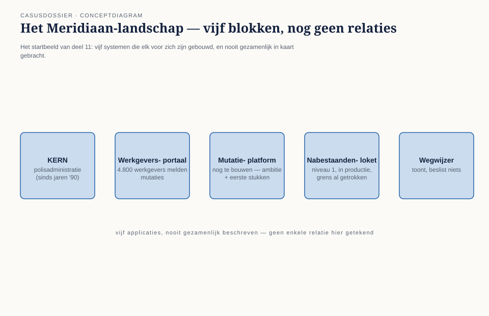
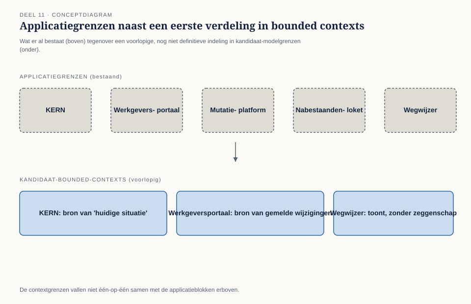
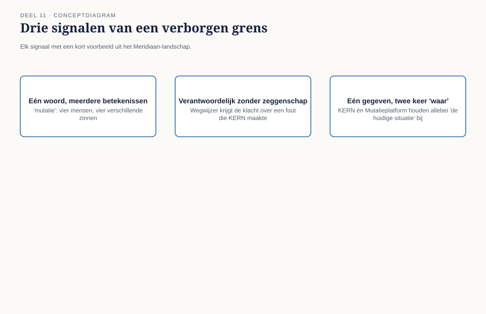

Deel 11 — Het landschap in kaart: van vijf applicaties naar kandidaat-bounded-contexts
Slidedeck · Ductus-cursus Domain-Driven Design · niveau 2 · deel 11 van 30 · 27 slides — opening van niveau 2
Slide 1 — Titel
Domain-Driven Design — deel 11 Het landschap in kaart: van vijf applicaties naar kandidaat-bounded-contexts Niveau 2: professional, opening · Programma Mutatieplatform
Slide 2 — Waar we vandaan komen
Niveau 1: één subdomein, één team, tien weken. Niveau 2: vijf systemen, een heel programma, achttien maanden. Zelfde vak. Andere schaal.
Slide 3 — Het landschap
KERN · Werkgeversportaal · Mutatieplatform Nabestaandenloket · Wegwijzer Vijf systemen. Nooit gezamenlijk beschreven.

Slide 4 — Waarom nu
De Wtp-transitie: deadline 1 januari 2028. Mutaties moeten foutloos door het hele landschap stromen. Het Programma Mutatieplatform.
Slide 5 — De aanleiding
Twee deelprojecten. Twee aannames over “dienstverband”. Allebei intern consistent. Botsten pas na twee maanden bouwwerk.
Slide 6 — De opdracht
“Lever, parallel aan de bouw, een context map van het complete landschap.” — Iris Tanghe, programmamanager
Slide 7 — Daan, opnieuw
Niveau 1: developer zonder domeinkennis. Niveau 2: domeinmodelleur van het Programma Mutatieplatform. “Het enige stuk landschap waar deze vraag al eens goed is beantwoord.”
Slide 8 — De openingsvraag
Eén woord, vier antwoorden: “Wat is een mutatie?”
Slide 9 — Vier antwoorden
Vera (KERN): een wijziging in een dienstverband. Karsten (Werkgeversportaal): een bericht van een werkgever. Priya (Wegwijzer): “wist niet dat wij daar een mening over hadden.” Otto (Mutatieplatform): een event. Punt.
Slide 10 — Foppe’s observatie
“Vier zinnen, vier verschillende dingen. Dit is precies de vraag die twee maanden geleden tot een botsing leidde.” — Foppe Sijbesma
Slide 11 — Wat dit deel oplevert
- Waarom een landschap zonder grenzen risico oplevert
- Applicatiegrens versus bounded-context-grens
- Drie signalen van een verborgen grens
- De landschapskaart
Slide 12 — Twee spiegelbeeldige fouten
WGP 2.0: één systeem, één woord voor te veel dingen. Nu: meerdere systemen, hetzelfde woord, stilzwijgend aangenomen dat het hetzelfde betekent.
Slide 13 — Applicatiegrens ≠ bounded-context-grens
Applicatiegrens: waar draait de software. Bounded-context-grens: waar geldt welk model. Die twee vallen niet vanzelf samen.
Slide 14 —

Vijf applicatieblokken naast een eerste, voorlopige verdeling in bounded contexts
Slide 15 — Drie signalen van een verborgen grens
Eén woord, meerdere betekenissen. Een team dat boet voor andermans beslissing. Een gegeven dat op twee plekken “waar” is, maar niet hetzelfde.
Slide 16 —

Drie signalen, elk met een Meridiaan-voorbeeld
Slide 17 — De werkvorm van dit deel
De landschapskaart
Verdeelt een compleet applicatielandschap in kandidaat-bounded-contexts.
Slide 18 — Vier stappen
- Inventariseer de applicaties
- Verzamel kernwoorden per applicatie
- Leg de lijsten naast elkaar, markeer botsingen
- Trek een voorlopige contextgrens
Slide 19 —

Het invulblad, met twee kernwoordenlijsten als voorbeeld naast elkaar
Slide 20 — Veld 5: het veld dat het verschil maakt
Als we deze grens verkeerd trekken,
welke twee teams botsen daar dan op —
en wanneer merken ze het pas?
Slide 21 — Terug naar de casus
Drie kernwoordenlijsten op het bord: KERN, Werkgeversportaal, Wegwijzer.
Slide 22 — Wat opvalt
“Deelnemer” staat op alle drie de lijsten. Betekenis lijkt identiek — tot Priya het “nu”-verschil ziet.
“Dat is niet hetzelfde ‘nu’.” — Foppe Sijbesma
Slide 23 — Drie voorlopige grenzen
KERN — authentieke bron van de huidige situatie Werkgeversportaal — bron van gemelde, nog niet verwerkte wijzigingen Wegwijzer — toont, stelt zelf niets vast
Slide 24 — Otto’s omslag
“Ik wilde meteen naar het Mutatieplatform. Nu snap ik waarom Foppe ons eerst hierheen stuurde.” — Otto Feenstra
Slide 25 — Daans conclusie
Niveau 1: één grens, in tien weken. Vandaag: drie voorlopige grenzen, in twee uur. “Dit wordt geen tien keer zoveel werk — een ander soort werk.”
Slide 26 — Wat nog open staat
Vijf kandidaat-contexts. Nog geen antwoord op: welke verdienen de meeste aandacht?
Slide 27 — Volgende keer
Deel 12 — kerndomeinkeuze: core, supporting en generic, op de schaal van het hele landschap.